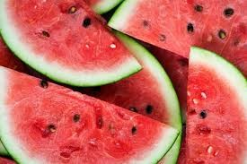
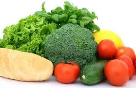
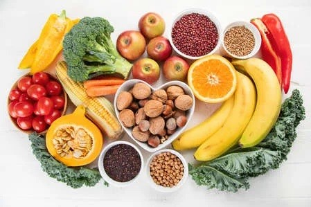

Conhecendo os alimentos: do natural aos industrializados
Alimentos naturais são aqueles obtidos diretamente de plantas ou animais (frutas, verduras, legumes, ovos, carnes) sem alterações após a colheita ou abate. Eles se diferenciam por não conter aditivos artificiais, conservantes ou substâncias sintéticas, sendo essenciais para uma dieta saudável e rica em nutrientes.
De onde eles vem Os alimentos naturais (também chamados de in natura ou minimamente processados) vêm diretamente da natureza e são classificados de acordo com sua origem em três grupos principais: vegetal, animal ou mineral.
Exemplos: Tomate, alface, banana, pera, mamão...
Por que são importantes para a saúde Os alimentos naturais (in natura ou minimamente processados) são fundamentais para a saúde porque fornecem os nutrientes essenciais para o funcionamento do organismo sem a adição de substâncias prejudiciais, como excesso de sal, açúcares e gorduras. Eles agem na prevenção de doenças crônicas, fortalecem a imunidade e proporcionam energia de qualidade, ao contrário dos produtos industrializados.


